When I joined, Primer had pivoted from a supplemental after-school product to full-time, in-person K–8 microschools. The product hadn't caught up: an MVP held together by external tools, with a limited experience for teachers, students, and parents.
Over nearly three years I led UX and Product Design as Primer scaled its network, directing a small team while doing the core design work myself. I overhauled the design system and designed the experiences that replaced the previous product: one platform where teachers teach, students learn, and parents stay informed, coherent across web, mobile web, native, and the classroom.
Oct 2023 – Jun 2026
Led UX & product design
MVP to full platform
Designed end-to-end
6
18
Campuses
4 surfaces
One design system
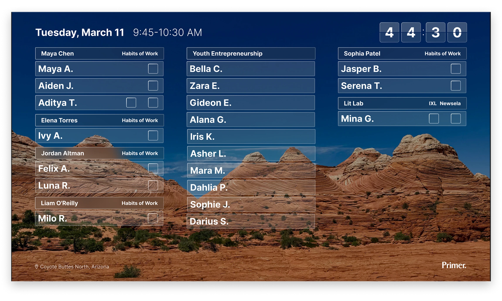
The television display design lets a teacher understand what's happening right now from anywhere in the classroom: which class each student is in, time left in the class block, and each student's progress on daily and weekly goals.
After visiting the classrooms and listening to teacher feedback, the UX problem was clear: put every tool a teacher needs in one place, so their day isn't spent switching tabs and reconciling five learning apps plus external tools like Slack, Zoom & Notion to manage their classrooms.
Outcomes
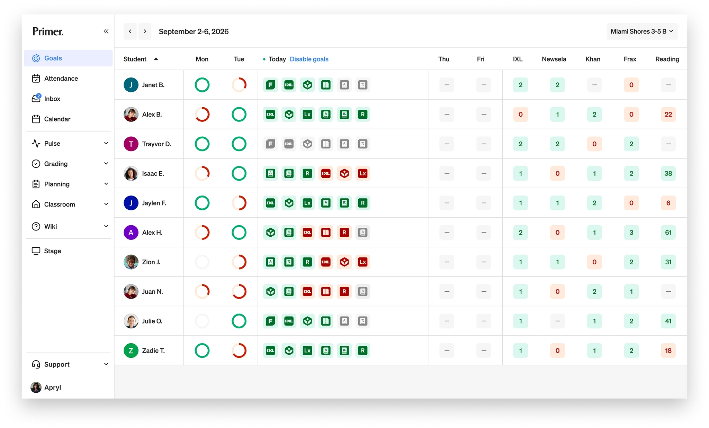
Teachers see the whole class at a glance. Each student's daily and weekly goal progress across learning apps is visible in one table, with on-track and off-track states understandable at a glance.
Before designing a consolidated goals interface, a student's progress lived inside each learning app, and every app has its own way of keeping tally. Khan counts points, IXL counts skills, Newsela counts quiz scores, independent reading counts minutes. To see where a student's progress was for that day or week, a teacher had to open each app individually. Mapped across an entire classroom meant it was nearly impossible to keep track of every student.
The first version of the design consolidated all the apps into one view: every student's daily goals, color-coded, green meant goal met, red meant goal missed, and grey meant no data. It solved the problem we set out to solve. Teachers could finally see the class at a glance.
But once teachers used it, the problem got deeper. A red icon tells you a student didn't meet their goal. It doesn't tell you why, or what to do about it. Green says the goal is met, but not by how much. The binary, green versus red, answered the first question: Who met their goals today? It didn't answer a more complicated question. What did they do today? The instinct to answer it by adding more to the dashboard would have buried the glance that made it useful.
The consolidated goals interface spanned four versions across a year, each one a different answer to the same widening question: How much can a single view carry before it stops being glanceable? The UX evolved as we designed, released and learned from teachers. The versions were:
Along the way as other parts of the product were evolving, pieces of information kept migrating to wherever they were most useful, some onto a shared class schedule, some onto a large-screen classroom display. I designed each version, watched it as it was released to real classrooms, and used teacher feedback to evolve the next version.
Four versions over a year, each one answering a question the last exposed. The flat grid was legible but shallow. The interpretation layer was richer but lagged the classroom. Progressive disclosure fixed the depth; the week-level view fixed the timespan. The drawer walks through each turn and what broke to trigger the next.
Once the data being displayed was set, we learned from teachers. Using progressive disclosure, the teacher can hover on any UI element to better understand completion. And on click, a teacher can open any student's full app goals to see domain-level mastery and a lesson-by-lesson history, scores and time included, without ever opening the source apps.
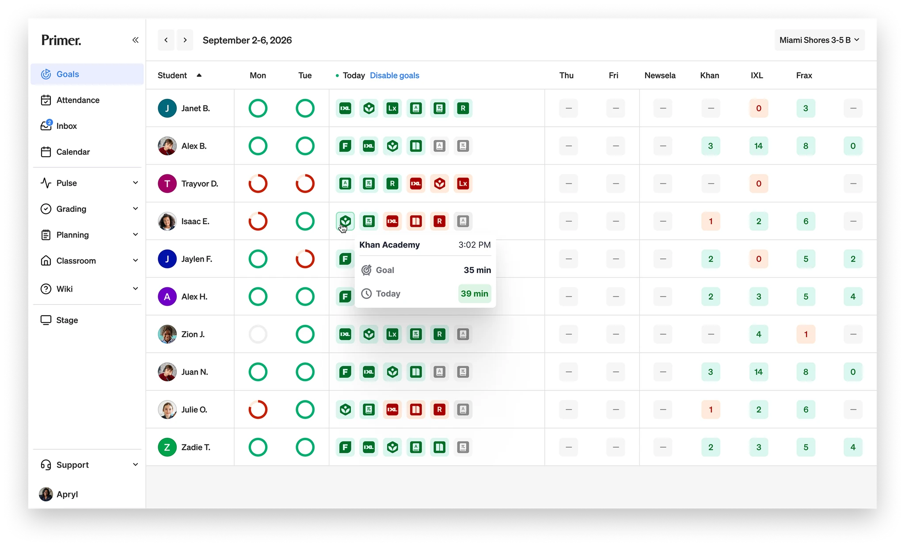
On hover the teacher can easily see the day's progress against the student's daily goal. Clicking opens the full detail.
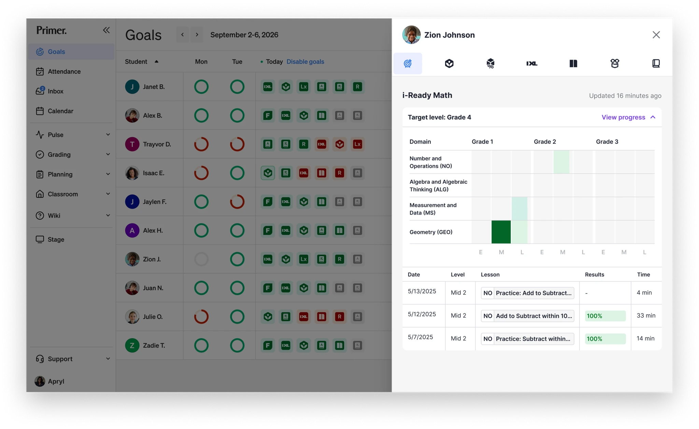
Opening a student's goals reveals domain-level mastery and a lesson-by-lesson history, scores and time included, pulled from the source apps so a teacher never has to leave the platform.
Most goals came from outside apps. The exception was Pursuits, Primer's term for project-based learning. Teachers authored these classes themselves, and the goal was a daily habits-of-work score that lived in the same goal system as Khan and IXL. Before the platform supported a self-serve Pursuit builder, teachers wrote the courses in docs and submitted them to a person for review, which wouldn't scale as campuses were added.
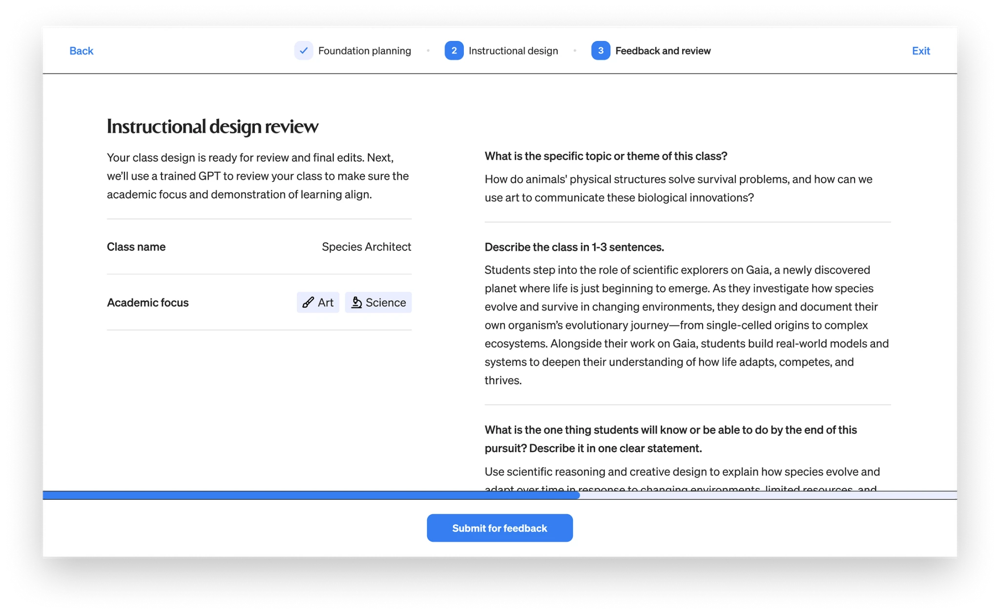
Teachers build their own project based learning classes inside the platform, setting the academic focus and structure instead of stitching materials together from outside tools.
I designed an LLM class-builder where teachers create a course and get feedback in the same place. A teacher works through foundation planning and instructional design, then submits for review. On submit, an LLM checks whether the academic focus, the learning goal, and the demonstration of learning are in sync, and returns structured feedback on each: aligned or not, with a note on what to revisit. The teacher revises and resubmits.
The impactful UX decision involved how the LLM's feedback behaved. I designed it as a soft gate. It never blocks a teacher from working, but a course only earns the 'ready to teach' label once it passes the LLM review, and a teacher who moves ahead without passing routes to a manual review queue instead.
That inverted the workload. A person used to read every course; now the LLM carries that volume and human review becomes the exception, which is what let course authoring scale across 18 campuses. Once a course passes, the builder unlocks more detailed authoring. I designed the flow and the loop, not the model itself.
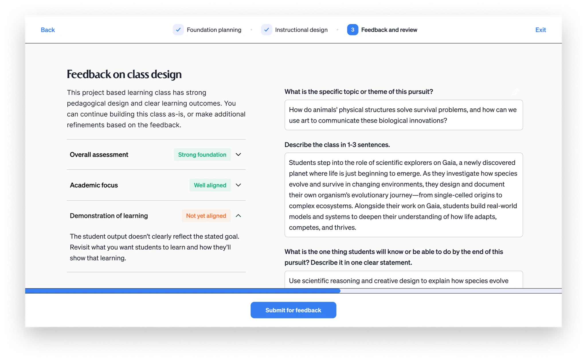
On submit, an LLM checks the course against the requirements for the categories the teacher chose and returns specific gaps to address, so revisions are targeted rather than guesswork.
Most learning happened in the physical classroom, but some students logged into a digital one to work with peers at their learning level. When I joined, that ran on Zoom, which had two problems. It cost more at network scale, and it was made for meetings, not teaching. Zoom had no concept of a class roster, a lesson, or the small tools a teacher reaches for mid-instruction.
I designed Prism, a virtual classroom shaped around how a class actually runs: a fixed-seat roster, small-group instruction with custom class layouts, class and individual student chats, screen sharing, and controls to manage class noise. The tool list changed as we put it in front of teachers, and we kept iterating. Prism still runs today.
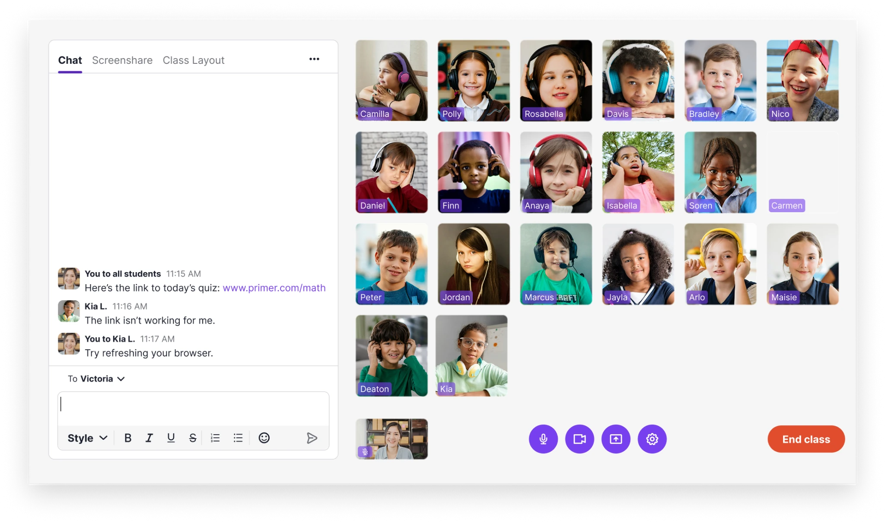
Custom tools allow a teacher to manage the classroom. These include chatting with students individually or as a group, screen sharing, and creating custom class layouts for small group work and 1:1 huddles.
The last piece of a teacher's day reached outside the classroom. Pulse gave parents a regular window in. I designed it as a per-class feed: teachers post photos and short updates, and parents see them on the native app. Teachers can also post field trip reminders, holiday schedules, and testing dates. Parents respond with emojis or comments, giving the feed a two-way dialogue. A regular view into what their kids were doing helped build trust with parents.
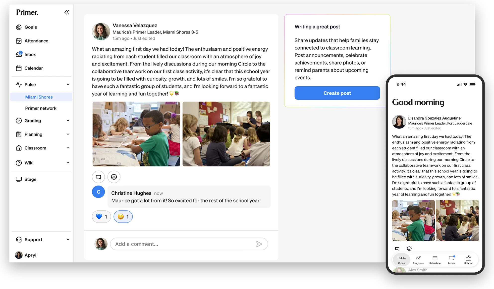
A custom feed allowed teachers to easily communicate to the families of the entire class. Parents received a push notification in the native app when new posts were ready.
Everything a teacher needed lived in the platform. Each of these replaced a tool rather than adding one, except the class-builder, which added a capability the platform never had. The teacher experience also included attendance, grading, literacy class tools, and reporting. One centralized place to run a classroom, not a collection of stitched together tools.
The day had a structure, but nothing in the student experience carried it. A static schedule and goals split across five apps on different screens meant a student couldn't tell what to do next or how their week was going, so every "What do I do now?" fell to the teacher to answer.
Outcomes
Self-direction starts with knowing where you are in the day. I designed the schedule block by block, from opening circle to breaks, with the current block always highlighted as the day moves through it, and its apps surfaced right there. A student can go back to finish work they missed, but not jump ahead. The day only offers what's happening now, and that's what lets a student follow it without asking.
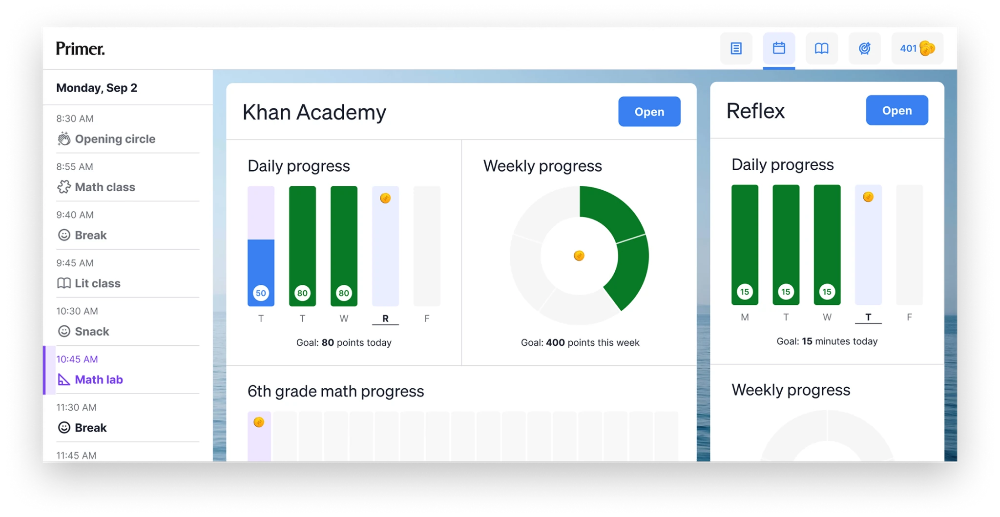
A time-based schedule lays out the full day block by block. Each class shows today's goal, the week, and progress toward a year-end target, so a student sees how daily work ladders toward where they need to be by June.
Knowing what to do now is half of it. A student also needs to see what they're working toward, and that lived across five apps, each with its own scoreboard: Khan in points, IXL in skills, Reflex in minutes, Newsela in quiz scores, reading in minutes. I pulled all five into one view, same card, same daily and weekly bars, so a student sees what to hit today and how the week is tracking without translating between systems.
A light reward sits on top: a coin for each daily goal met, spent at a midday reward shop on pencils, erasers, custom cursors and fonts. Keeping the shop closed the rest of the day means the coins reinforce the work without competing with it.
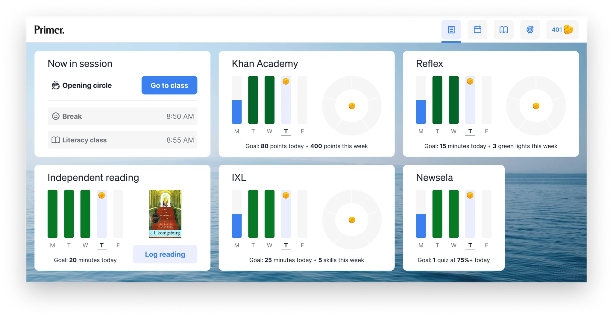
One dashboard for every goal: the current activity, what's next, and each app's daily and weekly target in a single view, no logging into five tools to see where the day stands.
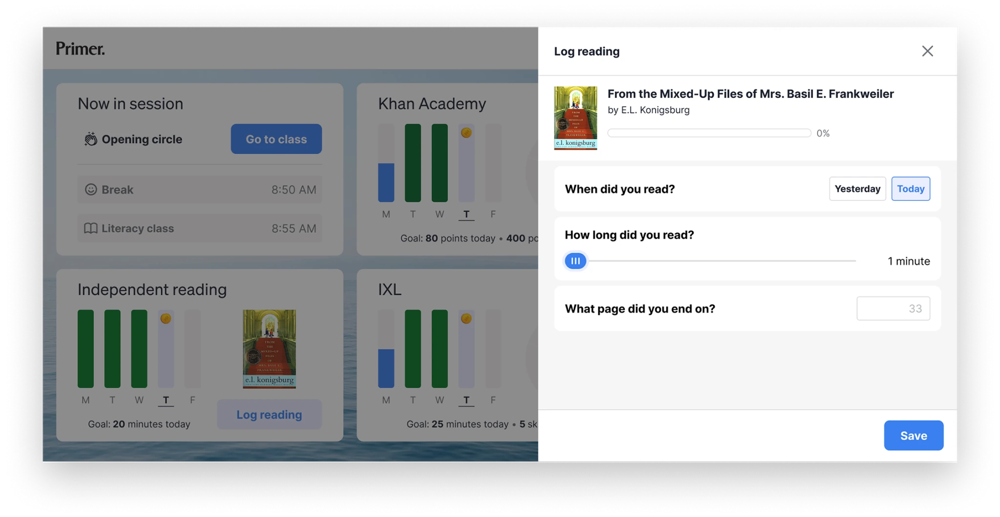
Four of the five goals sync automatically from their apps. Reading is the one a student logs themselves, recording the book, time, and page. Putting one core metric in the student's hands makes them responsible for their own progress, not just measured by it.
Teachers ran the classroom on a MacBook Air. Students ran it on Chromebooks, shorter screens with poorer color, in brightly lit rooms. I tested on a Chromebook for sizing and contrast under that lighting, and rather than shrink the teacher layout, I designed the student view for the screen it actually lived on. For Prism, the digital classroom, that meant keeping video, chat, and the current activity usable in far less vertical space.
Students can chat with their teacher directly, raise their hand and break into small groups.
Students knew where to be and when, what was expected each day and week, and they earned coins along the way. That gave them the autonomy to answer two questions on their own: what should I be doing right now, and what am I working toward. Which freed teachers to help the students who needed it.
No visibility into their child's day
Parents had almost no visibility into what their kids were actually doing at school. What did my student do today? Are they making progress? How do I reach the teacher? Where's the field trip permission slip? Most schools answer those questions with a mishmash of bolted-on, white-label tools that make a parent feel more disconnected, not less. At Primer, the whole relationship between a parent and their child's education was running through pieces that were never designed to work together.
The connection had to start at enrollment, which is far more than a form: families move through admissions interviews, learning profiles, tuition, and enrollment documents. Before the redesign, admissions reps spent much of that time chasing families by hand for missing paperwork.
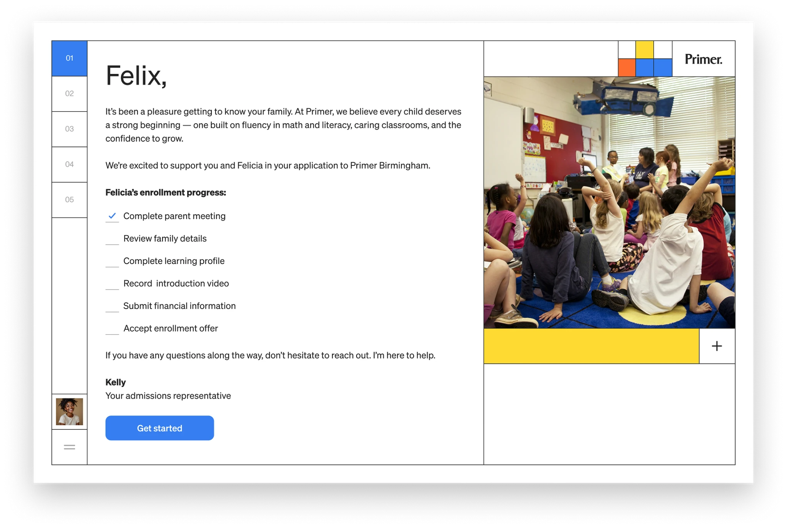
A personalized step-by-step checklist of what the family needs to accomplish to enroll. It starts with the first item checked and they have access to their admissions rep through the whole process.
I designed a fully self-service enrollment experience that guided parents through every step, family information, learning profiles, financial details, agreements, and payment, in one responsive flow, while keeping each family's admissions representative present throughout instead of replacing them with a form. Automating the paperwork let reps spend less time collecting documents and more time helping families make the decision itself.
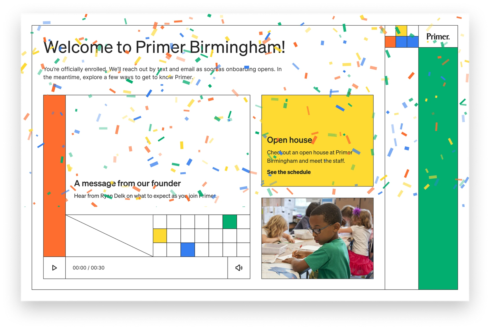
A message welcomes new families when they are officially enrolled and transitions them into onboarding.
When I joined, Primer was pivoting from a supplemental after-school product to full-time, in-person K–8 microschools, with no real design foundation for a platform to run the network. Nearly three years later it was one platform, teachers, students, and parents each with an experience designed for how they actually work, coherent across web, mobile web, native, and the classroom, all running on a single design system. That foundation helped Primer scale from 6 to 18 campuses without the product coming apart. I led the design of the entire platform, making decisions with product and engineering about what to prioritize and what to leave out, directing a small team while doing the core work myself.